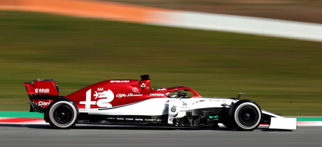
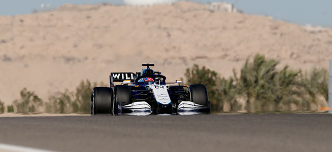
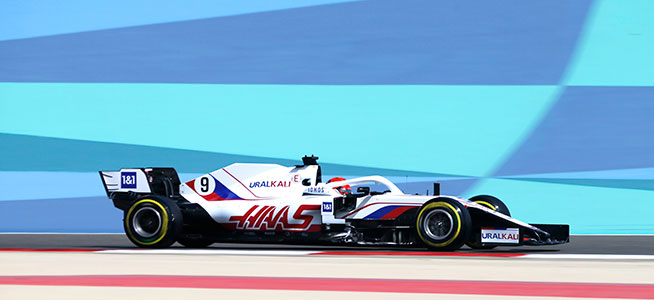

MERCEDES

Base: Brackley, Reino Unido
País de nacimiento: Alemania
Director Deportivo: Toto Wolff
Jefe Técnico: Mike Elliott
Chasis: W13
Motor: Mercedes
Neumáticos: Pirelli
Primera Temporada: 1970
Campeonatos: 8
MCLAREN

Base: Woking, Reino Unido
País de nacimiento: Reino Unido
Director Deportivo: Andreas Seidl
Jefe Técnico: James Key
Chasis: MCL36
Motor: Mercedes
Neumáticos: Pirelli
Primera Temporada: 1966
Campeonatos: 8
MCLAREN

Base: Milton Keynes, Reino Unido
País de nacimiento: Austria
Director Deportivo: Christian Horner
Jefe Técnico: Pierre Waché
Chasis: RB18
Motor: Red Bull Powertrains
Neumáticos: Pirelli
Primera Temporada: 1997
Campeonatos: 4
FERRARI

Base: Maranello
País de nacimiento: Italia
Director Deportivo: Mattia Binotto
Jefe Técnico: Enrico Cardile / Enrico Gualtieri
Chasis: F1-75
Motor: Ferrari
Neumáticos: Pirelli
Primera Temporada: 1950
Campeonatos: 16
ALPHA TAURI

Base: Faenza, Italia
País de nacimiento: Italia
Director Deportivo: Franz Tost
Jefe Técnico: Jody Egginton
Chasis: AT03
Motor: Red Bull Powertrains
Neumáticos: Pirelli
Primera Temporada: 1985
Campeonatos: 0
ASTON MARTIN

Base: Silverstone, Reino Unido
País de nacimiento: Reino Unido
Director Deportivo: Mike Krack
Jefe Técnico: Andrew Green
Chasis: AMR22
Motor: Mercedes
Neumáticos: Pirelli
Primera Temporada: 2018
Campeonatos: 0
ALPHA ROMEO
Base: Hinwil, Suiza
País de nacimiento: Italia
Director Deportivo: Frédéric Vasseur
Jefe Técnico: Jan Monchaux
Chasis: C42
Motor: Ferrari
Neumáticos: Pirelli
Primera Temporada: 1993
Campeonatos: 0
WILLIAMS
Base: Grove, Reino Unido
País de nacimiento: Reino Unido
Director Deportivo: Jost Capito
Jefe Técnico: François-Xavier Demaison
Chasis: FW44
Motor: Mercedes
Neumáticos: Pirelli
Primera Temporada: 1978
Campeonatos: 7
ALPINE

Base: Enstone, Reino Unido
País de nacimiento: Reino Unido
Director Deportivo: Otmar Szafnauer
Jefe Técnico: Pat Fry
Chasis: A522
Motor: Renault
Neumáticos: Pirelli
Primera Temporada: 1986
Campeonatos: 2
HAAS
Base: Kannapolis, Estados Unidos
País de nacimiento: Estados Unidos
Director Deportivo: Guenther Steiner
Jefe Técnico: Simone Resta
Chasis: VF-22
Motor: Ferrari
Neumáticos: Pirelli
Primera Temporada: 2016
Campeonatos: 0